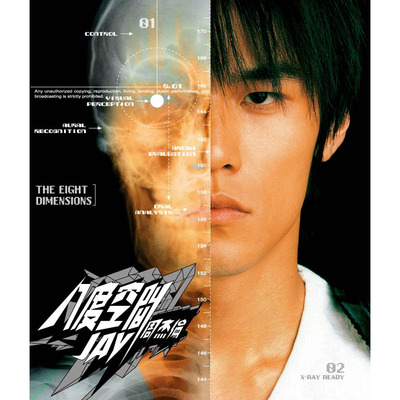

歷年專輯
Jay
Jay
不用到西方取經，卻能做出比取經回來更棒的作品，這就是杰倫。
| CD | ||||
|---|---|---|---|---|
| 曲序 | 曲目 | 作詞 | 編曲 | 時長 |
| 1. | 可愛女人 | 徐若瑄 | 周杰倫 | 3:57 |
| 2. | 完美主義 | 方文山 | 洪敬堯 | 4:00 |
| 3. | 星晴 | 周杰倫 | 洪敬堯 | 4:16 |
| 4. | 娘子 | 方文山 | 周杰倫 | 4:30 |
| 5. | 鬥牛 | 方文山 | 洪敬堯 | 4:35 |
| 6. | 黑色幽默 | 周杰倫 | 鍾興民 | 4:38 |
| 7. | 伊斯坦堡 | 徐若瑄 | 洪敬堯 | 3:25 |
| 8. | 印地安老斑鳩 | 方文山 | 洪敬堯 | 5:02 |
| 9. | 龍捲風 | 徐若瑄 | 鍾興民 | 4:07 |
| 10. | 反方向的鐘 | 方文山 | 周杰倫 | 4:19 |
范特西
經過將近一年時間的精燉細熬，大家萬眾期待的周杰倫第二張專輯---「范特西」，終於在歌迷們的千呼萬喚聲中，決定於2001年9月份與大眾見面！
Welcome To Jay’s Fantasy World!
| CD | ||||
|---|---|---|---|---|
| 曲序 | 曲目 | 作詞 | 編曲 | 時長 |
| 1. | 愛在西元前 （電視劇《醜女大翻身》片頭曲） |
方文山 | 林邁可 | 3:50 |
| 2. | 爸 我回來了 | 周杰倫 | 鍾興民 | 3:51 |
| 3. | 簡單愛 | 徐若瑄 | 林邁可 | 4:28 |
| 4. | 忍者 | 方文山 | 林邁可 | 2:35 |
| 5. | 開不了口 | 徐若瑄 | 洪敬堯 | 4:46 |
| 6. | 上海 一九四三 | 方文山 | 林邁可 | 3:13 |
| 7. | 對不起 | 方文山 | 洪敬堯 | 3:45 |
| 8. | 威廉古堡 | 方文山 | 洪敬堯 | 3:55 |
| 9. | 雙截棍 （電影青蜂俠片尾曲） |
方文山 | 鍾興民 | 3:21 |
| 10. | 安靜 | 周杰倫 | 鍾興民 | 5:30 |
八度空間

| CD | ||||
|---|---|---|---|---|
| 曲序 | 曲目 | 作詞 | 編曲 | 時長 |
| 1. | 半獸人 （《魔獸爭霸3》遊戲主題曲） |
方文山 | 林邁可 | 4:05 |
| 2. | 半島鐵盒 | 周杰倫 | 林邁可 | 5:17 |
| 3. | 暗號 | 許世昌 | 林邁可 | 4:29 |
| 4. | 龍拳 （百事可樂廣告主題曲） |
方文山 | 洪敬堯 | 4:32 |
| 5. | 火車叨位去 | 方文山 | 洪敬堯 | 4:34 |
| 6. | 分裂 | 周杰倫 | 鍾興民 | 4:12 |
| 7. | 爺爺泡的茶 | 方文山 | 林邁可 | 3:58 |
| 8. | 回到過去 | 劉畊宏 | 林邁可 | 3:51 |
| 9. | 米蘭的小鐵匠 | 方文山 | 洪敬堯 | 3:58 |
| 10. | 最後的戰役 | 方文山 | 鍾興民 | 4:11 |
11月的蕭邦
《夜曲》的音樂錄影帶在紐約取景，在10月21日全亞洲同步首播，首批專輯並附送三首音樂錄影帶DVD以及桌曆一份。
| CD | ||||
|---|---|---|---|---|
| 曲序 | 曲目 | 作詞 | 編曲 | 時長 |
| 1. | 夜曲 | 方文山 | 林邁可 | 3:50 |
| 2. | 藍色風暴 | 周杰倫 | 鍾興民 | 3:51 |
| 3. | 髮如雪 | 周杰倫 | 林邁可 | 4:28 |
| 4. | 黑色毛衣 | 方文山 | 林邁可 | 2:35 |
| 5. | 四面楚歌 | 徐若瑄 | 洪敬堯 | 4:46 |
| 6. | 浪漫手機 | 方文山 | 林邁可 | 3:13 |
| 7. | 逆鱗 | 方文山 | 洪敬堯 | 3:45 |
| 8. | 麥芽糖 | 方文山 | 洪敬堯 | 3:55 |
| 9. | 珊瑚海 | 方文山 | 鍾興民 | 3:21 |
| 10. | 一路向北 | 周杰倫 | 鍾興民 | 5:30 |
七里香
| CD | ||||
|---|---|---|---|---|
| 曲序 | 曲目 | 作詞 | 編曲 | 時長 |
| 1. | 我的地盤 | 方文山 | 洪敬堯 | 4:02 |
| 2. | 七里香 | 方文山 | 鍾興民 | 4:57 |
| 3. | 藉口 | 周杰倫 | 周杰倫 | 4:18 |
| 4. | 外婆（女聲：張欣瑜）周杰倫外婆出演 MV | 周杰倫 | 周杰倫 | 4:02 |
| 5. | 將軍 | 黃俊郎 | 洪敬堯 | 3:22 |
| 6. | 擱淺 | 宋健彰 | 鍾興民 | 3:58 |
| 7. | 亂舞春秋 | 方文山 | 鍾興民 | 4:37 |
| 8. | 困獸之鬥 | 劉畊宏 | 蔡科俊 | 4:27 |
| 9. | 園遊會 | 方文山 | 洪敬堯 | 4:13 |
| 10. | 止戰之殤 | 方文山 | 周杰倫 | 4:34 |
| 總時長： | 42:30 | |||
12新作

| CD | ||||
|---|---|---|---|---|
| 曲序 | 曲目 | 作詞 | 編曲 | 時長 |
| 1. | 四季列車 | 方文山 | 周杰倫 | 2:40 |
| 2. | 手語 | 周杰倫 | 林邁可 | 4:49 |
| 3. | 公公偏頭痛 | 方文山 | 周杰倫 | 3:03 |
| 4. | 明明就 | 方文山 | 黃雨勛 | 4:18 |
| 5. | 傻笑（演唱：周杰倫、袁詠琳 | 方文山 | 黃雨勛 | 4:50 |
| 6. | 比較大的大提琴（演唱：周杰倫、 梁心頤、楊瑞代） | 方文山 | 黃雨勛 | 4:13 |
| 7. | 愛你沒差 | 黃淩嘉 | 黃雨勛 | 4:41 |
| 8. | 紅塵客棧 | 方文山 | 黃雨勛 | 4:34 |
| 9. | 夢想啟動 | 林義傑 | 林邁可 | 3:25 |
| 10. | 大笨鐘 | 周杰倫 | 黃雨勛 | 4:03 |
| 11. | 哪裡都是你 | 周杰倫 | 黃雨勛 | 4:39 |
| 12. | 烏克麗麗 | 周杰倫 | 林邁可 | 2:55 |